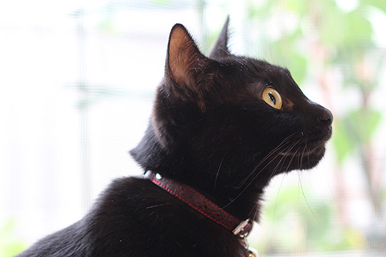

關於本站
歡迎光臨本站。 這裡是介紹我家貓主子姐妹的曬貓網站，有大量的可愛相片。 ※未經許可，請勿擅自複製轉載。
我家的貓咪
小町 （KOMACHI・♀）

出生不到2個月就到家的貓姐姐。 從出生就是養在溫室裡的花朵，所以非常膽小怕生。因為太怕生，只要聽到門鈴聲就會躲起來，所以就算是來我家的客人也難以見到。
小夏 （KONATSU・♀）
為了讓小町有個伴，在1年後抱回來貓妹妹。 原本是在埼玉縣飯能市的煤礦場出生長大的小野貓。和小町不同，是個性活潑親人，愛吃、愛玩、愛睡的元氣寶寶。
飼主介紹
- 暱稱 ：
- 李戴偉豪
- 職業 ：
- Web相關工作的SOHO族
- mail ：
- info@roka404.main.jp
- Web ：
- //roka404.main.jp/blog/